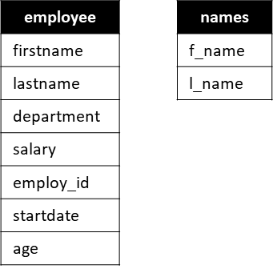
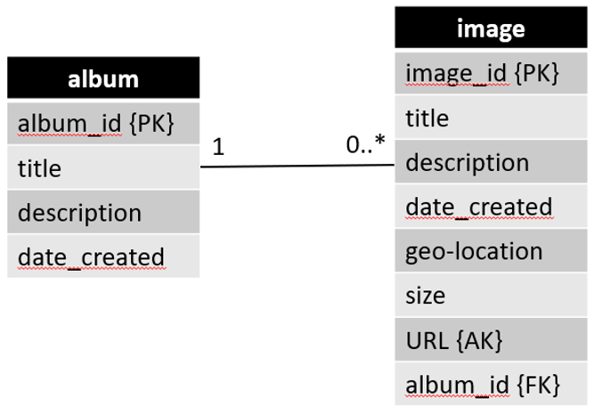

- 1 Welcome
- 2 Insert data
- 3 Insert data from query
- 4 Update data
- 5 Delete data
- 6 Delete rows
Data Manipulation Language (SQL)
This tutorial will introduce how to manipulate the data in a database. This includes:
- Inserting data
- Updating existing data
- Deleting data
Inserting data
There are a few different ways of inserting data into the database. The first step here is to insert data by explicitly specifying the data.
Assume the following table, and columns

We wish to insert a new Employee, and can do so in different ways.
Explicit, all columns
INSERT INTO Employee(firstname, lastname, department, salary, employ_id, startdate, age)
VALUES('Troels', 'Mortensen', 'SW', 5000, 42, '01-08-2016', 34);
In the first line we specify we wish to INSERT data into the Employee table. We also provide a list of the columns, we wish to insert data into.
In the second line, we define what VALUES to insert.
Implicit, all columns
The second approach can be used, if you just wish to insert data into all columns. The result will be the same as above.
INSERT INTO Employee
VALUES('Troels', 'Mortensen', 'SW', 5000, 42, '01-08-2016', 34);
Here we have left out the column names, and so it is implicit that all columns are chosen, and the order is the same is in the table definition.
Explicit, some columns
You may wish to only insert data into some of the columns. Instead of using either of the above, and providing empty (e.g. null) values for some columns, you can instead specify which columns, you wish to insert data into. Like so:
INSERT INTO Employee(firstname, lastname, department, employ_id, startdate)
VALUES('Troels', 'Mortensen', 'SW', 42, '01-08-2016');
In the first line, we have specified the five columns for which we want to provide data. In the second row, the values are given. All columns not mentioned above will be set to null
Multiple inserts
You can insert multiple rows (in this example Employees) into the table with one statement, if you comma-separate the provided values like so:
INSERT INTO employee(firstname, lastname, department, employ_id, startdate)
VALUES ('Troels', 'Mortensen', 'SW', 42, '01-08-2016'),
('Peter', 'Jensen', 'GBE', 57, '01-02-2018');
Here, two sets of data are provided, separated with a comma.
Insert data from query result
Sometimes you wish to insert data based on a query result. Perhaps you are given a messy table with all data, and wish to split it out into separate tables.
Assume again the below Employee table, and another table, Names:

We now wish to take the firstname and lastname from all rows of the Employee table, and insert that data into the Names table.
We can do this by first getting the required data with a query, and then using that as the data to insert:
INSERT INTO Names(f_name, l_name)
(SELECT firstname, lastname FROM Employee);
The second row is the query which returns the firstname and lastname of all rows in Employee. This result is then inserted into Names. Notice that the number of columns queried and inserted into, must be the same. The same is true for the data type of the columns, e.g. f_name and firstname must have the same type.
Here you can find some introduction examples on the postgresql site.
The postgresql documentation for INSERT is found here. About half way down you will find some examples.
Updating existing data
We often need to update existing data. This slide contains a couple of examples.
The basic syntax for updating is as follows:
UPDATE table_name
SET column_name_1 = data_value_1
[,column_name_2 = data_value_2]
[WHERE condition]
The parts within [ ] are optional. E.g. you can update the values in one or multiple columns.
You can also specify a WHERE condition, so only matching rows are updated. Otherwise, all rows are affected.
Below we update the employee with employ_id = 24 so that their salary is 25000.
UPDATE employee
SET salary = 25000
WHERE employ_id=24;
You can expand on the WHERE condition with more constraints, as needed.
In the following we update three employees, specifically the ones with employ_id 17, 25, and 23.
The idea is that these employees moved to another department, identified by 'A9'. The start date is also updated.
UPDATE employee
SET department = 'A9',
startdate=CURRENT_DATE
WHERE employ_id IN (17, 25, 23);
What if we want to give every employee a 3% salary raise?
UPDATE employee
SET salary = salary*1.03;
But, maybe the managers deserve a bit more, say, another 5% raise:
UPDATE employee
SET salary = salary*1.05
WHERE position = ‘Manager’;
Let us promote one of our employees, 42, to a manager position, including a change to salary:
UPDATE employee
SET position = ‘Manager’, salary = 27000
WHERE employ_id = 42;
Again, you can find some extra examples here.
And the full documentation here.
Deleting data
We can remove all kinds of data:
- rows
- tables
- schemas
- domains
- constraints
The syntax is somewhat similar, except for rows, we will do those on the next slide.
If you wish to delete any of the other types of data, we use the DROP keyword:
DROP TABLE [IF EXISTS] employee [CASCADE];
This will delete the table employee. If the table contains any rows, you will get an error.
You can then append CASCADE, meaning all rows will be deleted as well. Be careful with this.
If the table you are trying to drop does not exist, you will get an error. You can include IF EXISTS to only drop the table, if it actually exists.
More information about dropping tables here.
In a similar way you can drop other things. A full list can be found here. It is an overview of all commands, just scroll down to the DROP [SOMETHING].
Deleting rows
You can delete all rows from a table with the below command. This will not DROP the table itself, just remove all data in it.
DELETE FROM <table name>
[WHERE condition]
You must specify the table name. If no WHERE clause is included, all rows are removed.
If you include a WHERE condition, only matching rows are removed.
Say the employee with id 24 resigns their job. We will then remove them from the database:
DELETE FROM employee
WHERE employ_id = 24;
More information can be found here.
ON DELETE constraints
When deleting something, you may get constraint errors, if you have not defined ON DELETE behaviours of foreign keys point to the table, you are deleting from.
For example, assume you have two tables, albums and images:

It is a 1:* relation, notice image has a foreign key reference to album(album_id).
We could have the following data in albums:
| id | title | description | date_created |
|---|---|---|---|
| 1 | quidem | quam nostrum impedit mollitia quod et dolor | 20-03-2019 |
| 2 | sunt qui | ut pariatur rerum ipsum natus repellendus praesentium | 12-03-2017 |
| 3 | omnis laborum | et rem non provident vel ut | 25-11-2018 |
| 4 | non esse | id non nostrum expedita | 11-01-2013 |
and in images we could have:
| id | title | description | date_created | url | album_id |
|---|---|---|---|---|---|
| 1 | odio | aut ipsam quos | 24-09-2011 | https://via.placeholder.com/600/323599 | 1 |
| 2 | voluptate | ut esse id | 19-05-2012 | https://via.placeholder.com/600/1224bd | 2 |
| 3 | tenetur | et soluta est | 19-03-2016 | https://via.placeholder.com/600/a19891 | 3 |
| 4 | expedita | quam quos dolor eum | 26-06-2017 | https://via.placeholder.com/600/224566 | 2 |
| 5 | neque | magni nulla et dolores | 08-07-2017 | https://via.placeholder.com/600/40591 | 3 |
| 6 | praesentium | et corrupti nihil cumque | 03-01-2018 | https://via.placeholder.com/600/1fb08b | 4 |
| 7 | quidem | quod non quae | 16-10-2019 | https://via.placeholder.com/600/14ba42 | 1 |
What would happen, if we tried executing the following command?
DELETE FROM albums WHERE id = 1;
It would result in an error message like the following:
[2021-04-05 15:02:25] [23503] ERROR: update or delete on table "album" violates foreign key constraint "photo_album_id_fkey" on table "photo"
[2021-04-05 15:02:25] Detail: Key (id)=(1) is still referenced from table "photo".
It tells us we are violating a foreign key constraint, because rows in images, the images with ids: 1 and 7, are referencing the album row we are trying to delete.
Either, we will have to "clean up" first, meaning we manually delete all images referencing the album, we want to delete.
Or we should have added an ON DELETE behaviour when declaring the images table:
CREATE TABLE images (
id SERIAL PRIMARY KEY,
title VARCHAR(50),
description VARCHAR(250),
date_created DATE,
url VARCHAR(250) UNIQUE,
album_id INTEGER REFERENCES album(id) ON DELETE [CASCADE / SET NULL]
)
Here, if you pick:
- CASCADE: all rows in
imagesreferencing the deleted album, will also get deleted - SET NULL: all rows in
imagesreferencing the deleted album, will get theiralbum_idattribute set toNULL, i.e. they are no longer part of any albums.
This was discussed in the session about Data Definition Language.